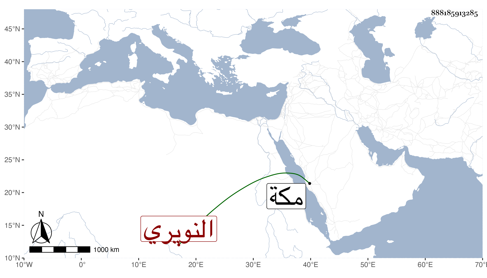

0902Sakhawi.DawLamic.ITO20230111-ara1.EIS1600.888185913285
Biography ID: 888185913285
النويري بضم مصغر نسبة لنويرة خلق منهم بمكة كثيرون كأبي اليمن محمد بن محمد بن علي بن أحمد وبنيه علي وعمر وأبي بكر ومحمد وابني علي عبد القادر وعبد الحق أبي القاسم وأبي الفضل المحمدين ابني أبي الفضل محمد بن المحب أحمد بن محمد بن أحمد وابن أولهما محب الدين أحمد وابني ثانيهما أبي بكر محمد ونسيم الدين أحمد وبني أولهما يحيى ومحمد وعبد الرحمن ومن غيرها أبو القسم محمد بن محمد بن محمد وابنه أبو الطيب والعلم محمد بن عبد الرحمن ابن أبي الغيث والبدر محمد بن محمد بن محمد بن عبد الرحيم بن إبرهيم أحد نواب الحنفية وجده لأمه محمد بن عبد الله بن حسين أحد قراء السبع وكان شافعيا يتكسب بالشهادة .
